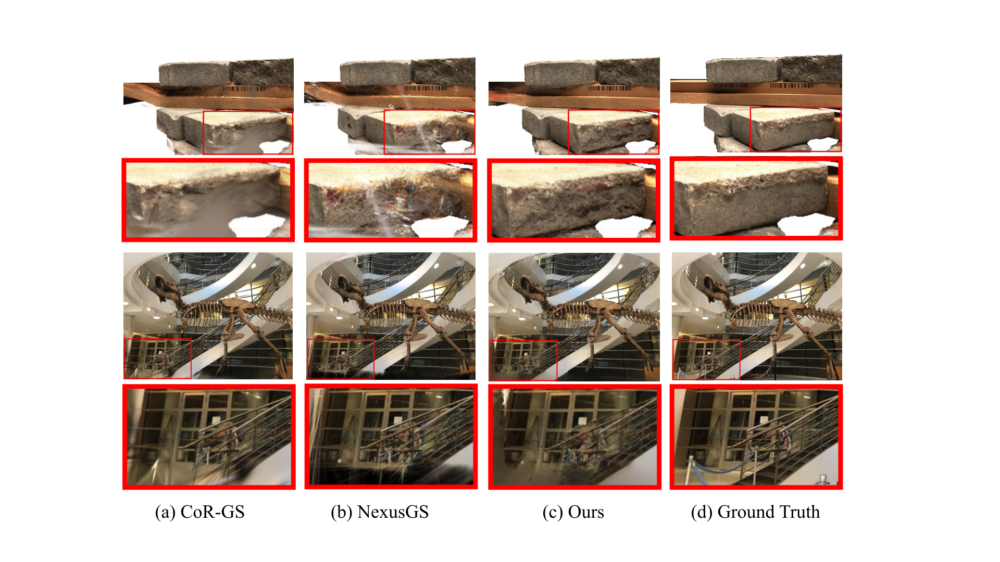

Multimodal-Prior-Guided
简单摘要
这篇工作要解决的问题是：我们提出多模态先验引导重要性采样作为稀疏视图新视图合成中分层 3D 高斯分布 (3DGS) 的中心机制。
对应的核心做法是：我们的采样器融合了互补的线索——光度渲染残差、语义先验和几何先验——以产生稳健的局部可恢复性估计，直接驱动在何处注入精细高斯函数。
从机制上看，关键设计在于：围绕这个采样核心构建，我们的框架包括（1）从粗到细的高斯表示，它使用稳定的粗层对全局形状进行编码，并有选择地添加精细基元，其中多模态度量指示可恢复的细节；。
训练或推理层面的重点是：(2) 几何感知采样和保留策略，集中对几何关键和复杂区域进行细化，同时保护约束不足区域中新添加的基元免遭过早修剪。
实验层面的主要信号是：通过优先考虑一致的多模态证据支持的区域，而不是单独的原始残差，我们的方法减轻了过度拟合纹理引起的错误，并抑制了外观不一致带来的噪声。


简而言之，这篇论文关注的核心是：这篇工作要解决的问题是：我们提出多模态先验引导重要性采样作为稀疏视图新视图合成中分层 3D 高斯分布 (3DGS) 的中心机制。 对应的核心做法是：我们的采样器融合了互补的线索——光度渲染残差、语义先验和几何先验——以产生稳健的局部可恢复性估计，直接驱动在何处注入精细高斯函数。 从机制上看，关键设…
这篇工作要解决的问题是：新颖的视图合成是计算机视觉的一个核心问题，在虚拟/增强现实、机器人技术和内容创建领域有着广泛的应用。
对应的核心做法是：虽然 3D 高斯溅射 (3DGS) 通过密集的多视图输入提供高保真、实时渲染，但其性能在稀疏视图条件下会恶化，因为 (i) 几何监督在空间上变得稀疏且不均匀，以及 (ii) 默认。
从机制上看，关键设计在于：我们如何将有限的高斯预算分配到实际上可以恢复精细细节的位置？。
训练或推理层面的重点是：先前缓解稀疏视图故障的努力包括基于深度的正则化、多场正则化、dropout 式正则化器以及利用预训练模型恢复密集对应或初始化密集点云的方法。
实验层面的主要信号是：这些策略提高了鲁棒性，但它们要么施加空间均匀的约束，要么依赖启发式算法，而这些启发式算法无法告诉我们在哪里可以可靠地恢复额外的几何图形。
核心创新
综合引言与方法部分，这篇论文的核心创新可以概括为以下几方面：
1）问题定义与研究动机
这篇工作要解决的问题是：新颖的视图合成是计算机视觉的一个核心问题，在虚拟/增强现实、机器人技术和内容创建领域有着广泛的应用。
对应的核心做法是：虽然 3D 高斯溅射 (3DGS) 通过密集的多视图输入提供高保真、实时渲染，但其性能在稀疏视图条件下会恶化，因为 (i) 几何监督在空间上变得稀疏且不均匀，以及 (ii) 默认。
从机制上看，关键设计在于：我们如何将有限的高斯预算分配到实际上可以恢复精细细节的位置？。
训练或推理层面的重点是：先前缓解稀疏视图故障的努力包括基于深度的正则化、多场正则化、dropout 式正则化器以及利用预训练模型恢复密集对应或初始化密集点云的方法。
实验层面的主要信号是：这些策略提高了鲁棒性，但它们要么施加空间均匀的约束，要么依赖启发式算法，而这些启发式算法无法告诉我们在哪里可以可靠地恢复额外的几何图形。
2）方法框架与核心模块
这篇工作要解决的问题是：我们的设计以多模态先验引导的重要性采样为中心，以在分层高斯泼溅框架内解决稀疏视图新颖的视图合成问题。
对应的核心做法是：图：框架描述了管道，其三个主要组件是。
从机制上看，关键设计在于：(1) 分层高斯表示 (subsec:hier) 保留粗略的全局形状并选择性地添加精细细节；。
训练或推理层面的重点是：(2) 多模态重要性评估模块（subsec:mmia），通过将光度残差与语义线索和几何先验（例如深度、法线）融合来计算局部可恢复性分数；。
实验层面的主要信号是：(3) 几何感知采样策略 (subsec:caas)，使用多模态分数来提议、放置和保留最有可能改善几何形状的精细高斯分布。
3）实验设计与工程价值
这篇工作要解决的问题是：我们进行了全面的实验来评估我们的分层 3D 高斯 Splatting 框架在稀疏视图新视图合成任务上的性能。
对应的核心做法是：与跨多个数据集和指标的现有方法相比，我们的评估显示出卓越的性能。
从机制上看，关键设计在于：实验设置数据集和实施细节。
训练或推理层面的重点是：我们评估新颖视图合成的三个标准基准。
实验层面的主要信号是：(1) LLFF 包含 8 个前向真实场景，(2) DTU 包含受控照明下的 15 个以对象为中心的场景，(3) Mip-NeRF360 合成数据集，包含 9 个具有复杂材质和照明的场景。
技术细节
下面按照论文的方法章节结构展开，重点说明模型的关键模块、公式设计和训练策略。
这篇工作要解决的问题是：我们的设计以多模态先验引导的重要性采样为中心，以在分层高斯泼溅框架内解决稀疏视图新颖的视图合成问题。
对应的核心做法是：图：框架描述了管道，其三个主要组件是。
从机制上看，关键设计在于：(1) 分层高斯表示 (subsec:hier) 保留粗略的全局形状并选择性地添加精细细节；。
训练或推理层面的重点是：(2) 多模态重要性评估模块（subsec:mmia），通过将光度残差与语义线索和几何先验（例如深度、法线）融合来计算局部可恢复性分数；。
实验层面的主要信号是：(3) 几何感知采样策略 (subsec:caas)，使用多模态分数来提议、放置和保留最有可能改善几何形状的精细高斯分布。
$$ \mathcal{G}_f = \{(\mu_j^f, \Sigma_j^f, \alpha_j^f, c_j^f)\}_{j=1}^{M_f} $$
这条公式用于定义模型中的核心计算关系：左侧给出目标量，右侧由输入与参数共同决定。阅读时可先关注 G、f、c_j、j 的物理/几何含义，再看它们如何影响训练目标或渲染结果。
$$ S_{\text{render}}(x,y) = \|I_{\text{gt}}(x,y) - I_{\text{render}}(x,y)\|_2 $$
这条公式用于定义模型中的核心计算关系：左侧给出目标量，右侧由输入与参数共同决定。阅读时可先关注 x、y 的物理/几何含义，再看它们如何影响训练目标或渲染结果。
$$ S_{\text{semantic}}(x,y) = \mathcal{F}_{\text{seg}}(I_{\text{ref}})(x,y) \cdot (\omega_{\text{boundary}}(x,y) + \omega_{\text{foreground}}(x,y)) $$
这条公式用于定义模型中的核心计算关系：左侧给出目标量，右侧由输入与参数共同决定。阅读时可先关注 x、y、F 的物理/几何含义，再看它们如何影响训练目标或渲染结果。
$$ S_{\text{geometry}}(x,y) = \|\nabla D(x,y)\|_2 + \lambda_{\text{curv}} \kappa(x,y) $$
这条公式用于定义模型中的核心计算关系：左侧给出目标量，右侧由输入与参数共同决定。阅读时可先关注 x、y、D 的物理/几何含义，再看它们如何影响训练目标或渲染结果。
$$ \mathbf{p}_w = R^{-1}\left(d,K^{-1}\begin{bmatrix}u\ v\ 1\end{bmatrix}^{T} - t\right), $$
这条公式用于定义模型中的核心计算关系：左侧给出目标量，右侧由输入与参数共同决定。阅读时可先关注 p、R、d、K 的物理/几何含义，再看它们如何影响训练目标或渲染结果。
把全文方法串起来看，这篇论文的逻辑基本都遵循同一条主线：先把输入组织成更容易处理的表示，再通过模型结构和损失函数把这个表示推向目标输出，最后用可视化与数值实验共同证明该设计有效。
实验结论
实验部分主要回答两个问题：第一，方法是否真的优于已有基线；第二，这种优势来自哪一个设计决策。
这篇工作要解决的问题是：我们进行了全面的实验来评估我们的分层 3D 高斯 Splatting 框架在稀疏视图新视图合成任务上的性能。
对应的核心做法是：与跨多个数据集和指标的现有方法相比，我们的评估显示出卓越的性能。
从机制上看，关键设计在于：实验设置数据集和实施细节。
训练或推理层面的重点是：我们评估新颖视图合成的三个标准基准。
实验层面的主要信号是：(1) LLFF 包含 8 个前向真实场景，(2) DTU 包含受控照明下的 15 个以对象为中心的场景，(3) Mip-NeRF360 合成数据集，包含 9 个具有复杂材质和照明的场景。
- 方法在核心指标上的优势与结构设计和训练目标直接相关；
- 消融实验表明，拿掉关键模块后性能与结果质量都有明显回落；
- 论文不仅比较数值，也关注可视化质量、稳定性和泛化能力等更贴近真实使用的信号。
理解评价
这篇工作要解决的问题是：我们提出了一个具有多模态先验引导重要性采样的分层框架，以解决 3D 高斯泼溅中的稀疏视图挑战。
对应的核心做法是：我们的方法引入了分层高斯、多模态重要性评估和可靠性感知掩蔽，以改进几何监督和高斯布局。
从机制上看，关键设计在于：实验证明对现有方法有显着改进。
训练或推理层面的重点是：该框架提高了渲染质量，支持移动 AR/VR 和快速原型设计中的实际应用。
实验层面的主要信号是：这项工作为稀疏视图新颖视图合成提供了基础，证明了将多模态先验引导重要性采样与分层高斯集成的有效性。
如果把它当成研究参考，建议重点关注三件事：第一，这套方法真正依赖的归纳偏置是什么；第二，实验中真正拉开差距的模块是哪一个；第三，它的局限究竟来自数据、算力还是监督信号本身。
以下相关论文可以作为进一步追踪的入口：